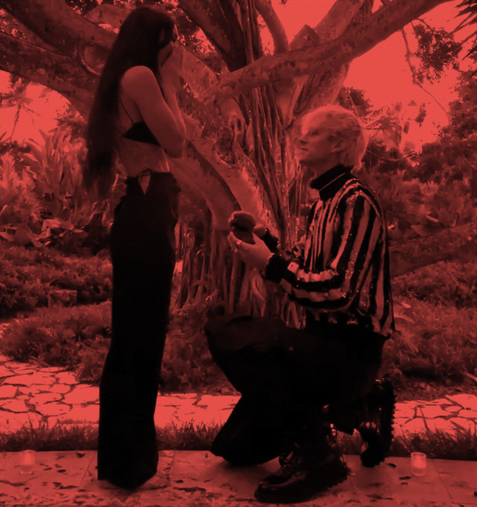
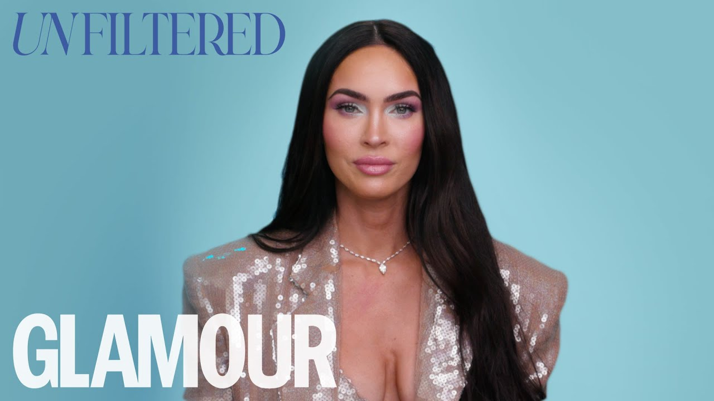
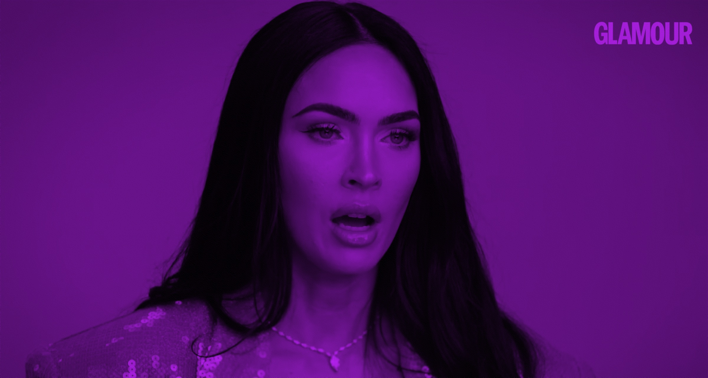

update
Search
머신 건 켈리가 메건 폭스에게 청혼을 한 직후 메건 폭스는 한 인스타그램
게시물을 올린다. 게시물에서는 청혼 당시 사진과 함께 그 과정을 서술하며
"And then we drank each other's blood(그리고 우리는 서로의 피를
마셨다)"라고 언급한다.
2022년 1월 12일, 메건 폭스가 해당 게시물을 인스타그램에 올리자,
트위터는 몇 시간 만에 두 갈래로 갈라졌다. 한쪽에서는 순수한 충격이
앞섰다. "메건 폭스가 방금 MGK랑 서로의 피를 마셨다고 한 거 맞아?"라는
반문이 타임라인을 메웠다. 반대편에서는 이 모든 상황 자체를 즐기는
분위기가 형성됐다. 작가 록산 게이는 이 커플의 기행을 "무해하게
이상하다"며 대수롭지 않게 받아넘겼고, 몇몇 코미디언들은 두 사람의
관계를 두고 "영혼이 뒤섞이는 사이" 같은 농담을 던졌다.
약 세 달 뒤인 2022년 4월 메간 폭스는 글래머 UK와의 인터뷰에서 이에
관한 해명을 남긴다.
"서로의 피를 마신다고 하면 사람들이 오해할 수 있을 것 같아요. 우리가
잔을 들고 <왕좌의 게임>처럼 서로의 피를 마시는 모습을 상상하실 텐데,
실제로는 그냥 몇 방울일 뿐이에요. 하지만 맞아요, 우리는 가끔 순전히
의식적인 목적으로 서로의 피를 마셔요. 저는 훨씬 더 절제된 편이에요...
저는 타로 카드를 보고 점성술에 관심이 많고, 이런저런 형이상학적 수행과
명상을 하고 있어요. 그리고 신월(초승달)과 보름달 때 의식도 치르고,
이런 것들을 해요. 그래서 제가 그걸 할 때는 어떤 통과의례이거나 어떤
이유가 있어서 하는 거예요. 그리고 그건 통제된 방식이에요 — '몇 방울
흘려서 서로 마시자' 이런 식으로요."
"So, I guess to drink each other's blood might mislead people or
people are imagining us with goblets and we're like Game of Thrones,
drinking each other's blood." "It's just a few drops, but yes, we do
consume each other's blood on occasion for ritual purposes only." "I'm
much more controlled... I read tarot cards and I'm into astrology and
I'm doing all these metaphysical practices and meditations." "And I do
rituals on new moons and full moons, and all these things. And so,
when I do it, it's a passage or it is used for a reason. And it is
controlled where it's like, 'Let's shed a few drops of blood and each
drink it.'"
게시물 캡션 전문은 다음과 같다. "2020년 7월, 우리는 이 반얀나무 아래
앉아 마법을 청했다. 그렇게 짧고 격렬한 시간 동안 함께 마주하게 될
고통을 그때는 알지 못했다. 이 관계가 우리에게 요구할 노력과 희생도
몰랐지만, 사랑에 취해 있었다. 그리고 카르마에도. 그렇게 1년 반이 지나,
함께 지옥 같은 시간을 통과하고, 내가 상상했던 것보다 훨씬 더 많이 웃은
끝에, 그는 내게 청혼했다. 그리고 이전의 모든 생에서 그랬듯, 앞으로의
모든 생에서도 그럴 것처럼, 나는 그러겠다고 답했다. ...그리고 우리는
서로의 피를 마셨다.""


